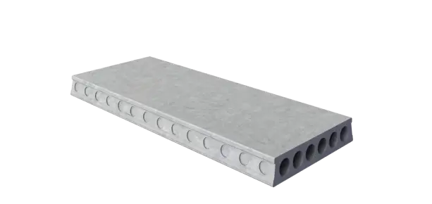

Плиты перекрытия ПК

Железобетонные плиты перекрытия изготавливаются в соответствии с требованиями ГОСТ. По особенностям конструкции изделия подразделяются на полнотелые (П, ПТ, ПТП), пустотные (ПК и ПБ), с отверстием (ПО). Доставляем по всей России.